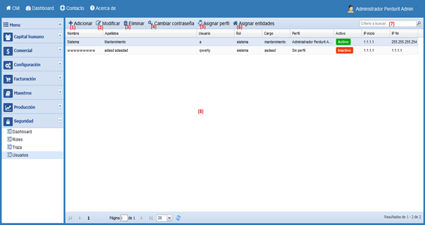
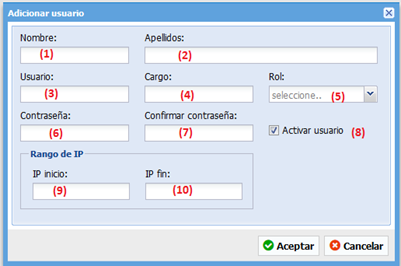
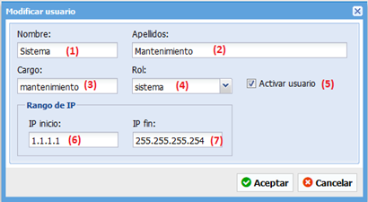
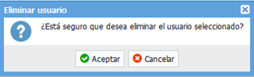
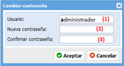
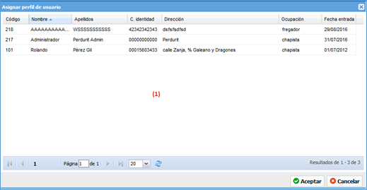
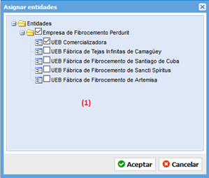

Ayuda en línea
Future Framework
Usuarios
Versión 1.0.0
Ruta de acceso: Seguridad/Usuarios
La funcionalidad “Usuarios” es la encargada de configurar los usuarios del sistema, sus restricciones de acceso, así como el rol que ejercerá en el sistema.

Gestionar usuarios.
1. Adicionar usuario, muestra una ventana para rellenar los datos del nuevo usuario.
2. Modificar usuario, muestra una ventana para modificar los datos del usuario seleccionado en la tabla número (8).
3. Eliminar usuario, elimina los datos del usuario seleccionado en la tabla número (8).
4. Cambiar contraseña, muestra una ventana para cambiar la contraseña del usuario seleccionado en la tabla número (8). No se necesita conocer la clave anterior.
5. Asignar perfil, muestra una ventana para asociar los datos de un trabajador a los del usuario.
6. Asignar entidades, muestra una ventana para configurar por cuales entidades el usuario puede acceder al sistema.
7. Buscador, busca coincidencias del texto suministrado con los datos listados en la tabla número (8).
8. Listado de usuarios, muestra el listado de los usuarios existentes en el sistema.

Adicionar usuario.
1. Nombre, se debe escribir el nombre de la persona a la que se desea crear el nuevo usuario.
2. Apellidos, se deben escribir los apellidos de la persona a la que se desea crear el nuevo usuario.
3. Usuario, se debe escribir el nombre del usuario que se desea crear, tiene que ser único.
4. Cargo, se debe escribir el cargo que ocupa el usuario que se desea crear.
5. Rol, se debe seleccionar el rol asignado al nuevo usuario.
6. Contraseña, se debe escribir la contraseña proporcionada al usuario.
7. Confirmar contraseña, se debe reescribir la contraseña proporcionada al usuario.
8. Activar usuario, se debe marcar la casilla para activar el nuevo usuario, si se desmarca la casilla el usuario no podrá utilizar el sistema.
9. IP inicio, se debe escribir el rango de inicio de IP desde el cual el usuario puede acceder al sistema.
10. IP fin, se debe escribir el rango de fin de IP desde el cual el usuario puede acceder al sistema.
Cuando se hayan rellenado los campos se debe presionar el botón Aceptar para guardar los cambios o el botón Cancelar para cerrar la ventana sin guardar los cambios.
Primero, se debe seleccionar del listado de usuarios, tabla número (8), el usuario que se desea modificar.

Modificar usuario.
1. Nombre, se debe escribir el nombre de la persona a la que se desea modificar el usuario.
2. Apellidos, se deben escribir los apellidos de la persona a la que se desea modificar el usuario.
3. Cargo, se debe escribir el cargo que ocupa el usuario que se desea modificar.
4. Rol, se debe seleccionar el rol asignado al usuario.
5. Activar usuario, se debe marcar la casilla para activar el usuario, si se desmarca la casilla el usuario no podrá utilizar el sistema.
6. IP inicio, se debe escribir el rango de inicio de IP desde el cual el usuario puede acceder al sistema.
7. IP fin, se debe escribir el rango de fin de IP desde el cual el usuario puede acceder al sistema.
Cuando se hayan rellenado los campos se debe presionar el botón Aceptar para guardar los cambios o el botón Cancelar para cerrar la ventana sin guardar los cambios.
Primero, se debe seleccionar del listado de usuarios, tabla número (8), el usuario que se desea eliminar. Si el usuario está siendo usado el sistema no permitirá que sea eliminado.

Eliminar usuario.
Si presiona el botón Aceptar el sistema verificará si puede realizar la acción y procederá a eliminar el usuario seleccionado, en caso de presionar el botón Cancelar, se cerrará la ventana y no se realizará ninguna acción.
Primero, se debe seleccionar del listado de usuarios, tabla número (8), el usuario al que se desea cambiar la contraseña. No se necesita conocer la clave anterior.

Cambiar contraseña.
1. Nombre de usuario, este campo no es editable, muestra el usuario al que se desea cambiar la contraseña.
2. Nueva contraseña, se debe escribir la nueva contraseña, debe tener como mínimo 8 caracteres.
3. Confirmar contraseña, se debe escribir nuevamente la contraseña.
Si presiona el botón Aceptar el sistema cambiará la contraseña del usuario, en caso de presionar el botón Cancelar, se cerrará la ventana y no se realizará ninguna acción.
Primero, se debe seleccionar del listado de usuarios, tabla número (8), el usuario al que se desea asignar un perfil. Esta opción asocia los datos de un trabajador de la entidad a los del usuario.

Asignar perfil.
1. Listado de trabajadores, se debe seleccionar el trabajador que se desea asociar a los datos del usuario, esto permitirá que el usuario tome los datos personales del trabajador, incluye la foto.
Si presiona el botón Aceptar el sistema asociará el perfil de usuario, en caso de presionar el botón Cancelar, se cerrará la ventana y no se realizará ninguna acción.
Primero, se debe seleccionar del listado de usuarios, tabla número (8), el usuario al que se desea asignar las entidades. Esta opción configura por cuales entidades el usuario puede acceder al sistema.

Asignar entidades.
1. Árbol de entidades, se debe seleccionar del árbol de entidades las entidades por las cuales el usuario podrá acceder al sistema.
Si presiona el botón Aceptar el sistema asignará al usuario las entidades seleccionadas y le concederá acceso a la información de las mismas, en caso de presionar el botón Cancelar, se cerrará la ventana y no se realizará ninguna acción.